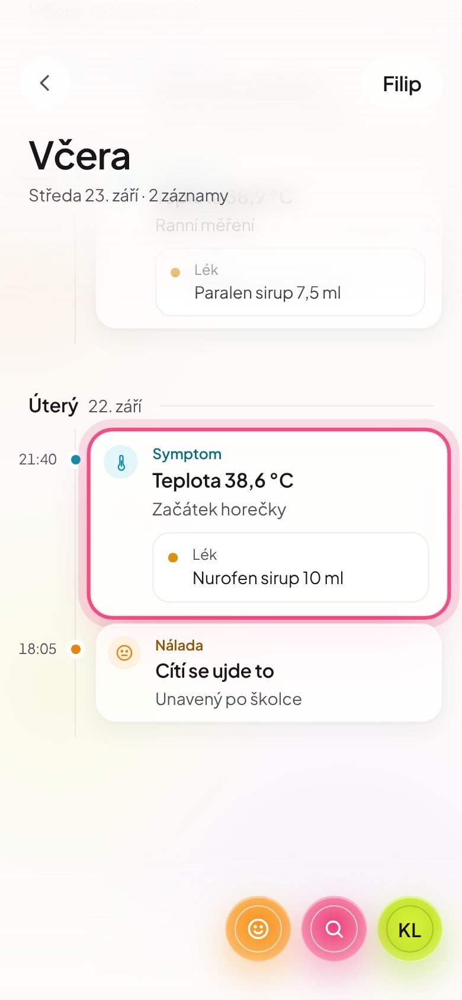
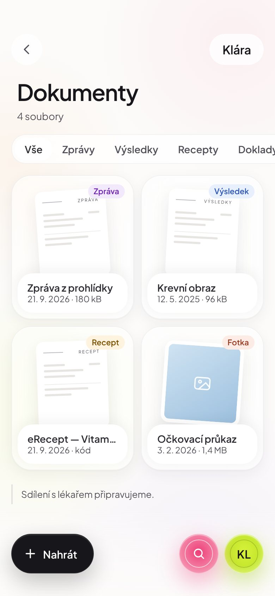
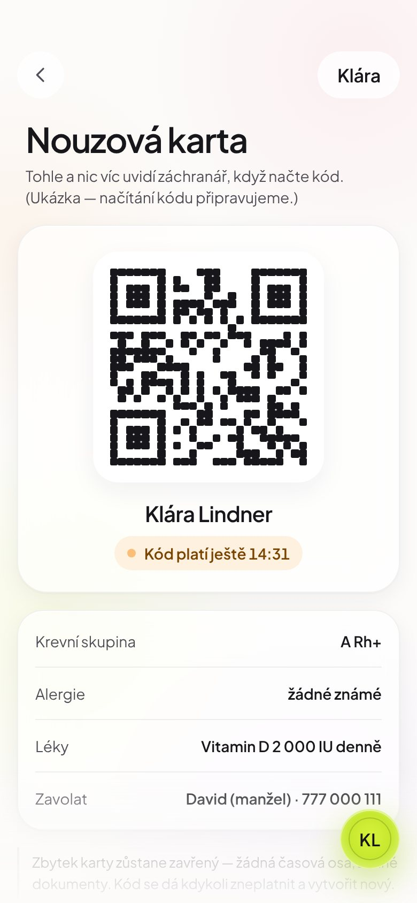
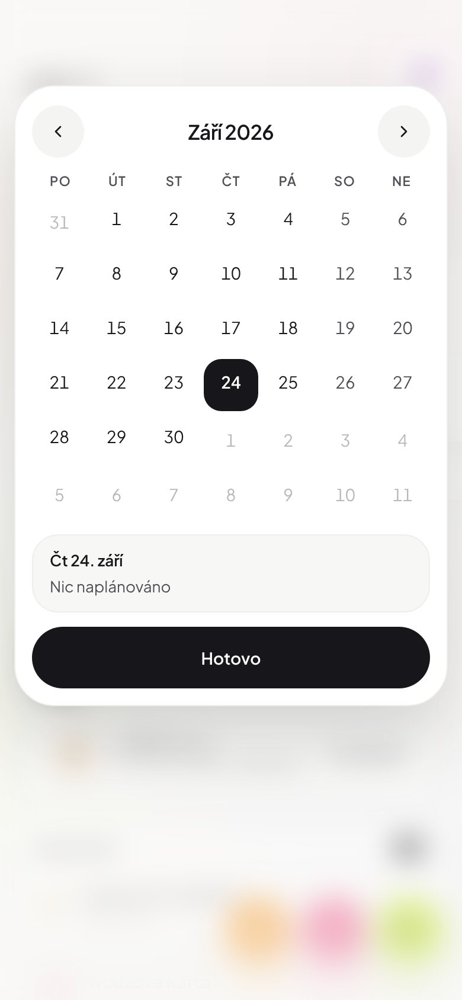

Časová osa
Teploty, léky, návštěvy. Den po dni.

Teploty, léky, návštěvy. Den po dni.

Zprávy, výsledky, recepty. Vyfotit a mít.

Krevní skupina, alergie, koho volat.

Lékaři, prohlídky, očkování celé rodiny.

Chytrý teploměr, hodinky nebo váha už data ukládají. LifeOS si je vezme sám a zařadí do správného dne.
Co se načte, určujete vy. Každý údaj zvlášť povolíte v telefonu.
Když učitelka zapíše teplotu nebo úraz, máte to hned v LifeOS. I s časem a tím, jak to ve školce ošetřili.
Jak funguje Digitální školka